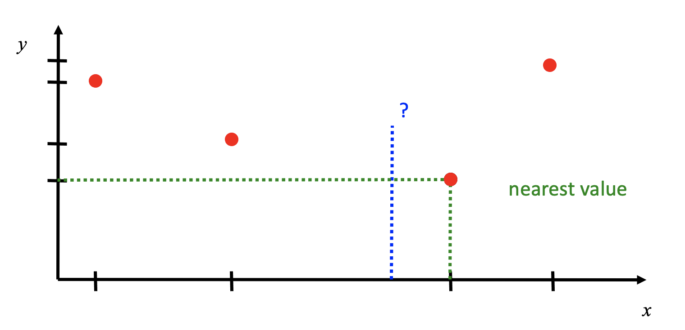
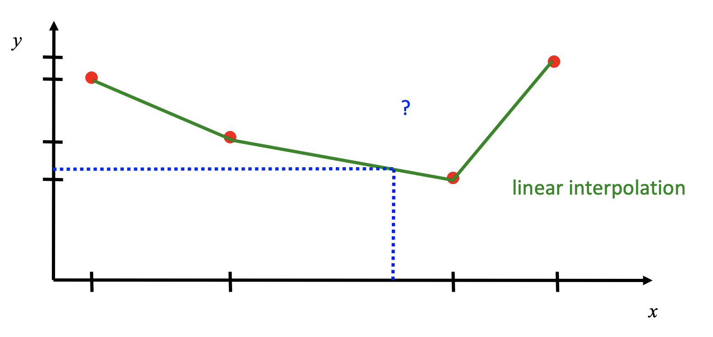
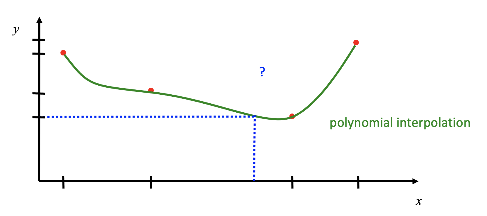
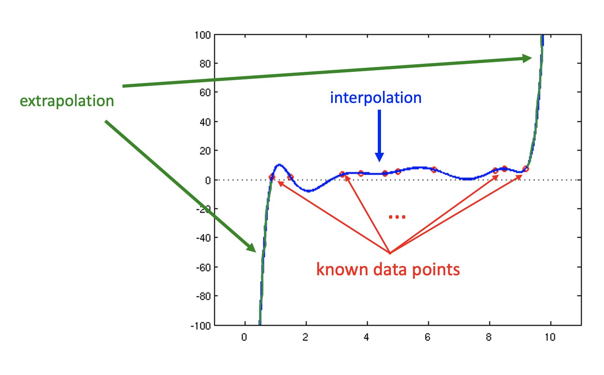
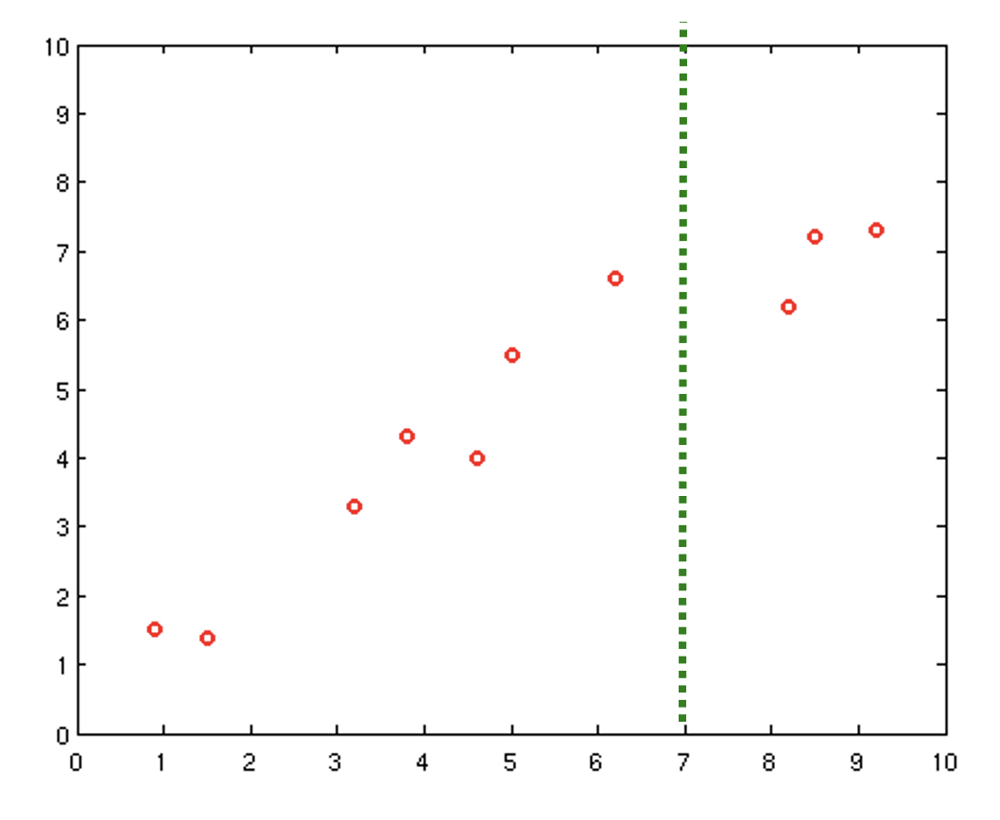

Section 10.1 Introduction to Interpolation
In engineering and science, one often finds oneself with a discrete number of data points (found by measuring or experimenting in some form), and one would like to estimate additional data points within the range of the known values. Interpolation is a way to estimate such additional data values between the known values.
How do you estimate the value of a function between data points?

Here are a few examples of how you could approach this interpolation problem:
Nearest value:
Linear interpolation:
Polynomial interpolation:



MATLAB has a built-in interpolating function called
interp1 (the '1' indicates that we are talking about 1-dimensional data - there also is a function called interp2 which interpolates values of functions of two variables). Here is the syntax of the interp1 function:yi = interp1(x,y,xi, 'method')
% 'nearest' - closest value to xi
% 'linear' - piecewise linear interpolation
% 'spline' - piecewise cublic splines
% 'pchip' - piecewise cubic Hermite polynomials
\(x\text{:}\) monotonic vector (containing the x-values of the known data points in ascending order)
\(y\text{:}\) vector of data values corresponding to the x-values (input data points)
\(xi\text{:}\) values at which to interpolate, can be a vector of same size as \(yi\) (independent variable)
'method': interpolation method to be used, chosen from those listed (see the MATLAB documentation for additional methods)
For
'nearest' and 'linear', \(xi\) must be in the domain of \(x\text{.}\)
For others, if \(x\) is outside the domain then extrapolation is performed.

The interpolation methods offered by MATLAB each have different advantages and disadvantages, and none of them uses interpolating functions of degree higher than 3. This is so for good reason since it is not typically advantageous to choose a high order polynomial for interpolating your data. Take a look at the following data, for example. Suppose we wanted to estimate the value of the function at the dotted green line:

Now see what happens when we use a 9th degree polynomial to estimate the data point at the green dotted line. Do you think this is a good estimate?
This shows the dangers of higher order interpolating polynomials, particularly if your data is noisy.